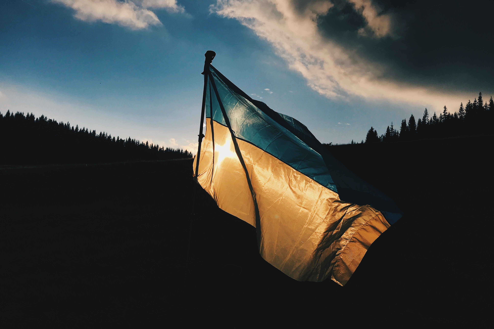

우크라이나는 동유럽에 위치한 나라이다. 러시아와 동쪽 및 남쪽 국경, 폴란드, 슬로바키아, 헝가리, 몰도바, 루마니아와 서쪽 국경, 벨라루스와 북쪽 국경을 접하고 있다. 남쪽으로는 또한 흑해와 아조프 해에 맞닿아 있다. 수도는 키이우이다.
러시아-우크라이나 전쟁은 본래 2014년부터 시작된 돈바스 전쟁으로 대표되는 우크라이나 정부군과 친러 반군 간의 우크라이나 영토 내 교전에 불과했으며, 돈바스 친러 세력의 힘만으로 우크라이나 정부군을 상대하기는 역부족이라 8년간 지지부진한 교착 상태에 빠진 상황이었다. 이후 돈바스 장악을 위해 러시아는 그동안처럼 친러 세력을 은밀히 지원하는 걸 넘어 좀 더 본격적인 개입을 계획해 위기를 고조시켰고 러시아의 전면적인 침공 징후는 2021년 초부터 곳곳에서 포착되어 왔다.